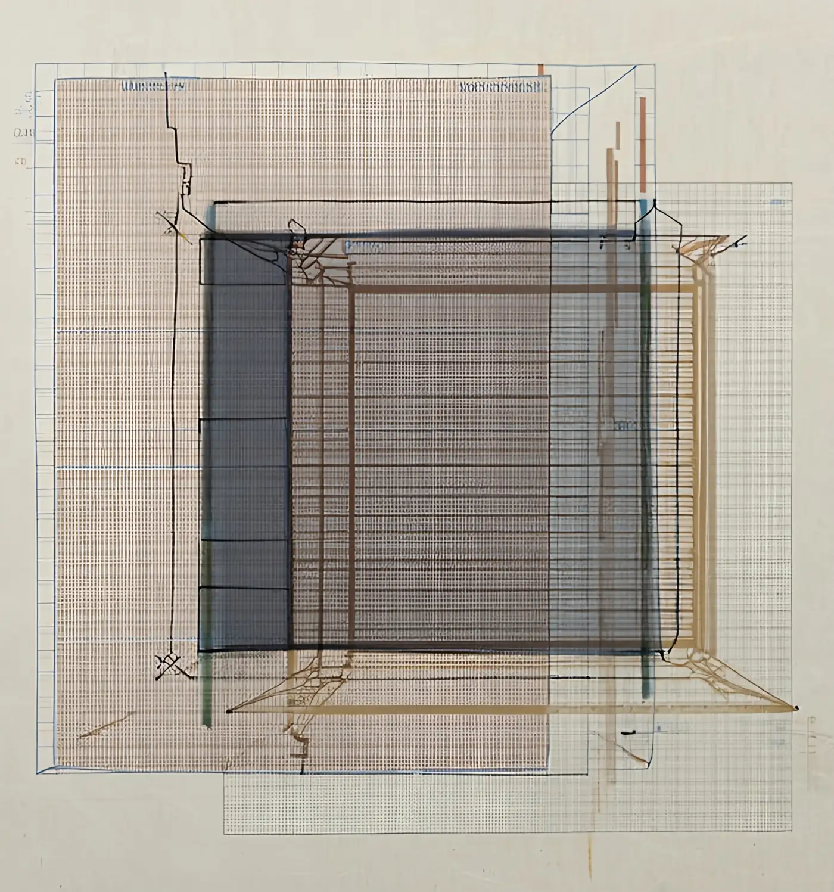
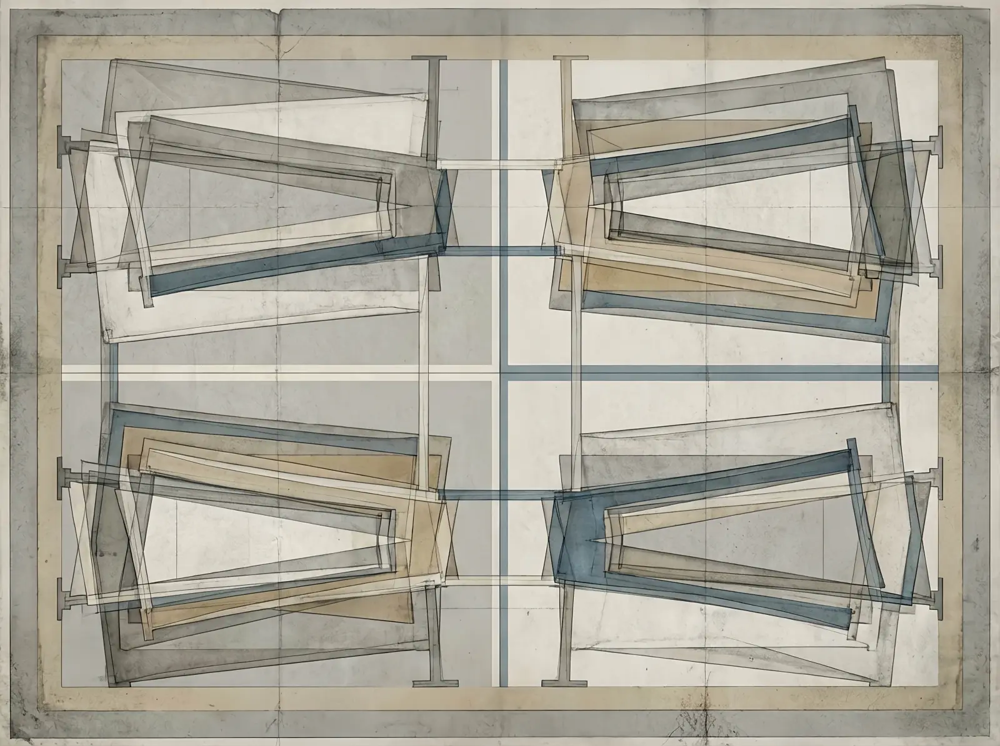
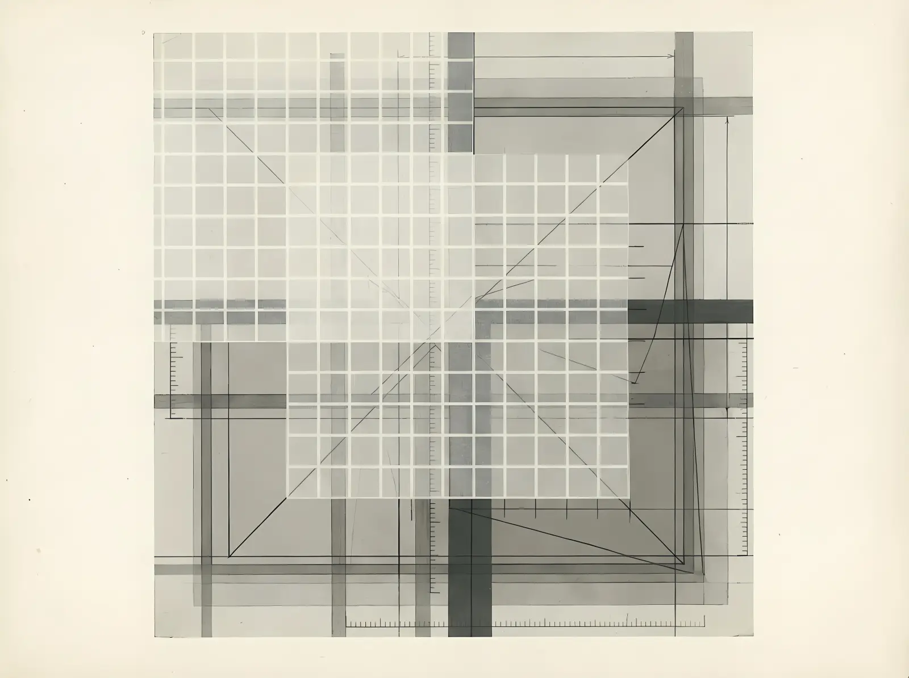

No. 00 · Working paper, version 0.0.4 · January 2026
Thoughts for thoughts
Starting points for three questions and a way of asking them
Three questions, a five-part method for comparing the systems through which people decide, and worked cases whose claims can be checked.
Rodrigo Jazinski
Abstract
People rarely decide unaided. They decide through lists, games, scales, ritual procedures and software, each of which organises what can be considered. This essay asks how such systems operate as decision frameworks under constraint, and how they can be compared without being collapsed into one another. It sets out three questions: what symbolic systems and cultural technologies make selectable, perceptible or legitimate when they organise a decision; how intention and decision-making can be represented as structured movement through a space of constraints; and under what conditions structure arises within formal systems without central control. It proposes a method for asking them: a structural profile that describes a system through five components (space, constraint, operator, reading and consequence), and three tests (mapping, representation and break) that discipline comparison between systems. The method is applied to cases where its claims can be checked. Two I Ching casting procedures produce the same distribution over cast hexagrams but move differently through the space of hexagrams: under yarrow stalks the expected number of changing lines depends on the hexagram cast, and under coins it does not. Reading only the count of shells in sixteen-cowrie divination turns 65,536 physical configurations into seventeen unequally likely outcomes. An allotment procedure whose result no one interprets, two practices of heated-bone divination that share a chance procedure but differ in whether they keep a record of its results, the strategic equivalence of number scrabble and noughts and crosses, and the behaviour of elementary cellular automata complete the cases. One working hypothesis runs through the essay: that a tight constraint at one level can make room for structure at another. The essay tests it against counter-cases and narrows it to a hypothesis about which conditions are necessary. It reports no new empirical results.
Keywords: cultural technologies; decision frameworks; constraint; closure; cognitive interfaces; representation; emergence; comparative method; divination; I Ching; sortition; cellular automata
Form. This is a programmatic essay. It defines terms, proposes a method and demonstrates the method on worked cases. Its claims are of four kinds, and the essay keeps them apart. Established claims come from the literature and are cited. Proposals are this essay’s own: definitions and a method, to be judged by whether they let comparisons be stated, checked and broken; where a proposal is applied to a case, the claim is marked proposal (applied). Checkable claims can be verified by calculation or enumeration; the calculations are given in the notes. Hypotheses are stated together with what would count against them. Section 9 lists the essay’s claims by kind. The interactive figures belong to the web edition at thoughts.rodrigojazinski.com. This edition gives each figure’s specification, which states what the figure must show and what would count against its claim.
Framework · Section 1
Introduction
In an account discussed by Moore (1957), drawing on Speck’s (1935) ethnography, Naskapi hunters in Labrador heated a caribou shoulder blade over a fire and read the cracks as a map of where to hunt. A person opening a phone today is typically shown a ranked list of things to watch, ordered by a model trained on what they and others have watched before. The two procedures share almost nothing in material, history or claim to truth. Both present a person with a narrowed field of possible action, produced by a procedure that person did not design. That shared feature can be described in the same terms, and what differs between them can then be stated rather than assumed.
Decisions are rarely made by unaided minds. People decide through things: written lists, tables, maps, games, scales and modes, ritual procedures, software. Each organises what can be considered, in what order and with what weight. This essay is about such systems, and about describing them precisely enough to compare them without collapsing them into each other.
That decisions run through artefacts is not a new observation. Herbert Simon argued that real decision-makers have limited information and limited capacity to compute, and so rely on procedures that are good enough rather than optimal (Simon, 1955, 1956). Gigerenzer, Todd and colleagues showed that simple heuristics can perform well because they exploit the structure of the environment in which they are used (Gigerenzer et al., 1999). Edwin Hutchins showed that the navigation of a ship is carried out by a system of people, instruments and charts, and that the cognitive work cannot be located in any single head (Hutchins, 1995). Jack Goody argued that the list, the table and the formula, as products of writing, changed what kinds of reasoning were possible in the first place (Goody, 1977), a thesis that has been influential and also disputed (Street, 1984).
Read together, these lines of work support a modest claim: reasoning is shaped by the structures it runs through. Some of those structures are formal. They make relations explicit, support derivation and make a procedure reproducible. Others are symbolic and cultural. They organise meaning, orient judgement, stabilise a context and make possibilities perceptible in ways a formal description may not exhaust. This is not a clean opposition. Formal systems can represent context and uncertainty, and cultural practices can be strictly rule-bound.
The two are nonetheless rarely studied with the same tools, and the cost is practical. Formal models of decision often set aside the interpretive work that makes a cultural technology function. Cultural analyses of a practice often leave its formal structure implicit. The result is descriptions that are either precise and thin or rich and vague. Without a common vocabulary, it is hard even to ask which features of two systems are shared, which are specific, and which are doing the work in a given case.
I do not want to settle that tension by reducing one side to the other. I want to describe both with enough precision to compare them. The question that holds the work together is:
How do symbolic systems and cultural technologies operate as decision frameworks under constraint, alongside and beyond purely formal computation?
Beyond here does not mean non-computational or superior. It names cases in which interpretation, history, situated practice or consequence is part of the phenomenon being studied and is not represented by a formal model of it alone.
Three narrower questions follow:
- Symbolic systems and cultural technologies. What does each kind of symbolic system make selectable, perceptible or legitimate when it organises a decision, and where does the comparison between them break? (Section 4)
- Intentional geometry and cognitive interfaces. How can intention and decision-making be represented as structured movement through a space of constraints, rather than as isolated, discrete choices? (Section 5)
- Formal systems and emergence. Under what conditions does system-level structure arise from rules, constraints and relations without central control? (Section 6)
The order is deliberate. The first question concerns cultural technologies; the third concerns formal systems. The second sits between them because both are encountered, by those who use them and by those who study them, through representations. Representation is where a cultural practice and a formal system can be brought into the same view without being assumed to be the same kind of thing.
The terms used here (symbolic system, cultural technology, decision framework, constraint, closure, cognitive interface) are defined in section 2. Section 3 sets out the method and what it leaves out. Sections 4 to 6 take the three questions in turn. Section 7 states the working practice, section 8 the standards of validation and the ways this kind of work fails, and section 9 lists the essay’s claims by kind.
The cases that follow share a recurring pattern. A limited set of possibilities, a restrictive rule or a fixed procedure does not simply reduce what can be done. Under some conditions it makes relations visible, stabilises a practice or gives rise to structure that no single element contains. This suggests a working hypothesis, stated here so that it can be tested in what follows rather than discovered at the end:
H. A tight constraint at one level can make room for structure at another.
H is a hypothesis about conditions, not a law. As stated, it claims only that this can happen, so no single counter-case refutes it; its value is that it prompts a narrower statement that can fail. Many tight constraints produce nothing at another level: an elementary cellular automaton that sends every cell to the same state has the same neighbourhood, the same two states and the same update scheme as one that can compute, and generates no structure at all (section 6). H is therefore useful only if it can say which constraints generate structure and by what mechanism. Supplying that account is what the method in section 3 is for, and section 6.3 returns to H in a narrower form that states what would refute it.
Framework · Section 2
A working vocabulary
Terms in this area carry several traditions at once and are used loosely. The definitions below are proposals: they fix how the words are used in this essay and the pieces that follow it, not what they must mean elsewhere.
System. A set of elements, the relations between them, and the rules or conditions by which their states change. A static artefact, such as a printed text or a table, becomes part of a system when a procedure for using it is specified; the profile in section 3 asks for that procedure.
Symbolic system. A system whose states stand for something beyond themselves and are read by someone or something. A hexagram read against a textual corpus, a chess position read as an advantage, a chord heard as unresolved: each is a configuration that carries meaning within a practice of reading.
Cultural technology. A historically situated, transmissible procedure that externalises or organises some part of thinking: remembering, ordering, selecting, interpreting. The emphasis is on operation rather than on the object that carries it. This follows the work on cultural techniques, which treats practices such as counting, filtering and drawing a grid as operative chains that precede the concepts later abstracted from them (Siegert, 2015), and Alfred Gell’s argument that art can be studied as a technical system that achieves effects on people (Gell, 1992). The term names a function, not a judgement of value. It implies nothing about progress, efficacy, superiority or truth. It is also used in recent work that describes large AI models as cultural and social technologies (Farrell et al., 2025); the sense here is wider, and covers any transmitted procedure that organises a decision, whether or not it involves computation.
Decision framework. A system that changes a field of possible action by sorting, ranking, removing, weighting or reframing possibilities. A framework need not make the final decision. The term is deliberately wider than decision procedure. A procedure produces an output through specified steps. A framework can also change what counts as an option before any procedure begins.
Constraint. A rule, condition, material limit or institutional circumstance that restricts which states or transitions are possible. Constraint is not only restriction. By removing possibilities, it can make relations visible, reduce search, stabilise a practice and create a space in which action becomes possible. Gibson’s notion of affordance makes a related point from perception: an environment is a structured field of possible action as well as a set of properties (Gibson, 1979). The present use is not identical to affordance, but both direct attention to the relation between structure and action. That constraints can enable as well as restrict is also developed, for intentional action, in the philosophy of complex systems (Juarrero, 1999). Where it matters, two kinds of constraint are distinguished. A constraint is interpretive when it bounds what can be read without fixing a single reading, as a canonical text bounds what a hexagram can be taken to say. It is syntactic when it fixes an outcome by rule or calculation, as the rules of chess fix the legal moves or a scoring formula fixes a score. The distinction is a matter of degree, and most systems combine the two: the rules of chess fix which moves are legal and leave which moves are good to judgement.
Closure. The point at which an open field of possible action is resolved into one outcome that is acted on, together with whatever resolves it. Closure can be reached by interpretation (a reader judges that a reading applies), by a rule (checkmate is a position on the board), by a threshold (a score crosses a cut-off) or by the draw of a chance procedure. Where closure falls, and who or what can reopen it, is often where systems that look alike differ most (section 4.2).
Representation. A structure that stands in for another structure, process or situation.
Cognitive interface. A representation that changes which relations a person can perceive, compare, manipulate or remember. The reference point is Donald Norman’s account of cognitive artefacts: a checklist does not improve memory, it changes the task so that less needs remembering (Norman, 1991). The test for a cognitive interface is whether changing it changes what can be seen or done, not whether it illustrates an idea. The idea sits close to the extended-mind thesis (Clark & Chalmers, 1998) but makes a narrower claim: about what a representation changes in a task, not about where a mind ends.
Emergence. Used in several distinct senses, set out in section 6.2. Until then it means only this: structure at the level of the whole system that is not specified by any single rule or element considered in isolation. The definition implies no mystery, irreducibility or force beyond the system. Those are further claims and must be argued separately.
Framework · Section 3
The method: a structural profile
The method has two parts. The first describes a system by five components. The second applies three tests to any proposed comparison or change of representation. Together they make up a structural profile.
A structural profile is an analytical instrument, not a claim about what a system essentially is or about how its practitioners understand it. It gives very different systems the same set of questions, so that their differences become visible without being erased.
Every profile states its unit of analysis: a system, a single decision, a representation or a particular interaction. The same practice can yield different profiles at different scales, and a comparison is only meaningful between profiles drawn at the same scale.
3.1 Five components
Space. The set of states or options relevant to the system. For a die, six faces. For chess, the legal positions reachable under the rules. For a musical mode, its pitches, their relations to a tonal centre and the combinations the practice treats as available. In a cultural system the space need not be a closed mathematical set; it may be a socially recognised field whose edges are partly interpretive. What counts as a distinct state is fixed partly by what the reading distinguishes (section 4.3).
Constraint. The rules, conditions, materials or conventions that limit which states are reachable and which transitions are allowed. The rules of chess, the intervals of a scale, the steps of a casting procedure and the ranking objective of a recommendation system are all constraints, but not of the same kind. The profile asks what kind of constraint is operating, interpretive or syntactic, and where it is located.
Operator. Whatever produces or selects the next state: a person choosing, a chance procedure, a deterministic rule, a computation, an institution or a mixture. Naming the operator is often the most revealing step, because it shows where agency sits and which parts of a transition lie outside the control of the person affected by it.
Reading. How a state becomes meaningful or actionable: who or what reads it, with what grammar or model, drawing on what body of interpretation. The reader may be a person, a text, a model, an institution or a distributed practice. For the purposes of the profile, a state with no reading is just a configuration.
Consequence. What follows from the reading: an action taken, an option removed, a ranking changed, a frame altered. The consequence often feeds back into the space for the next round.
The profile also asks where closure falls: at which component the open field becomes one outcome that is acted on, and who or what brings it there. Closure is not a sixth component. It is a question asked across the last three, because it can sit with the operator, with the reader or with the consequence. What triggers it may be written into the constraint: a rule such as checkmate, or a cut-off on a score, fixes in advance the condition under which the field closes, and the operator, reader or consequence then enacts it.
The five are asked in the same order of every system. They are not expected to have the same content in every case, and they are not claimed to be complete. A component may be empty, distributed across several actors, uncertain or disputed. A profile records that, rather than inventing content to fill a slot. A slot that can be filled only by changing what the component means is a finding about the instrument, not a defect to be concealed.
3.2 Three tests
A shared description makes comparison possible. It also makes false equivalence easy: once two systems share a vocabulary, they can be declared alike too quickly. Three tests guard against this.
Mapping test. If two systems are said to be alike, write the correspondence out component by component. What maps onto what? Which relations are preserved, transformed or lost? A mapping may be partial or asymmetric; what matters is that its correspondences, losses and limits are stated. An incomplete mapping is not a failed comparison. An unstated one is. A comparison that cannot yet be written out in this way remains a metaphor or an untested analogy. It may be useful, but it is not yet evidence.
Representation test. Recast the same task in a different representation and check whether what people can see, compare, remember or do changes. The task must be specified well enough that a change of representation is not mistaken for a change of problem. If something observable changes, the representation is doing cognitive work and must be part of the analysis. If nothing does, the representation is decoration.
Break test. Find the point where the comparison fails, and say why. Every comparison between unlike systems breaks somewhere. The break is often more informative than the match, because it marks what is specific to each system and the boundary of what the comparison can legitimately say.
The tests do different work. Mapping establishes correspondence. Representation examines what a change of presentation does. Break locates the limits of a comparison. None of them, alone or together, validates the profile as a general method; that can only come from its use.
3.3 Interactive figures as evidence
Each component is a slot that can be filled, and each test is an operation that can be run. That is what makes the method usable by a reader and not only by its author. The interactive figures in the web edition are built to that standard. Each states the claim it bears on, what the reader does, what it shows, what it does not show, and what result would count against the claim. Each has a reset control and a text equivalent, so that the argument can be followed without running it. This level of specification is deliberate: a figure that does not say what would count against its claim cannot serve as evidence for it. In this edition the specifications stand in for the figures.
Figure 1 (interactive). Profile builder.
- Claim: the five components can be filled for very different systems without silently changing their meaning between cases.
- Reader does: picks a system (a die, chess, a musical mode, the I Ching, Ifá, an allotment, a recommendation feed) or names one, states the unit of analysis, and fills the five slots, marking any that are empty, distributed or disputed. Once two profiles exist, a comparison view aligns them component by component and asks the reader to write the mapping and then to find where it breaks. For the I Ching and a recommendation feed, the essay’s own break point (section 4.2) is shown after the reader has committed theirs.
- Shows: two systems described against the same background, and the reader’s own mapping and break point.
- Does not show: that the five components are complete, or that a profile captures a practice as its practitioners understand it.
- Counts against: slots that can only be filled by changing what a component means from one system to the next.
Built to the specification above. The systems are those it names; the five components and their definitions are from section 3.1; the essay’s profiles, shown only after you have written your own, are the rows of the table in section 4.1; the break point is quoted from section 4.2. What you write stays on this page unless you press “Save in this browser”.
3.4 What the profile leaves out
The five components are a deliberate reduction. They were chosen because they can be asked of any system at the scale of a single decision, including a game played alone or a mode improvised in an empty room. Systems that act on people through institutions raise further questions that the profile does not ask: who has the authority to read a result and to override it; whether uncertainty is treated as calculable risk or as a situation whose terms are themselves unclear; whether a result can be revisited; what counts as an error and how it is found; and who can contest an outcome, and on what grounds. A longer instrument that adds these dimensions, the Comparative Constraint Analysis Matrix, has been developed in an unpublished codebook (Jazinski, 2026), and the pieces that follow will set it out where their cases require it. The five components here are not a summary of that instrument. They are the part of it that does not depend on an institution, restated so that it can be applied to any system. The shorter profile comes first because it is the part of the method that every later comparison uses.

First question · Section 4
Symbolic systems and cultural technologies
What does each kind of symbolic system make selectable, perceptible or legitimate when it organises a decision, and where does the comparison between them break?
Oracles, games, musical systems, allotment procedures, platforms, scoring instruments and algorithmic media can all be read as structured mechanisms that organise choice, stabilise context and help people act under uncertainty. I treat them neither as spiritual artefacts beyond analysis nor as proto-algorithms, but as cultural technologies in the sense defined in section 2. The aim is not to rank them or to explain one away by another. It is to profile them with the same five questions and see where they differ.
A caution applies to the divinatory cases. A profile isolates one procedural dimension of a practice. It does not describe the history, community, language, ritual setting or cosmology of a living tradition, and it makes no claim about what a consultation reveals. Its comparisons hold only at the level of procedure.
4.1 Eight profiles
Each row asks the same five questions of a different system. The unit of analysis is a single consultation, move, phrase, allotment, ranking or assessment.
| System | Space | Constraint | Operator | Reading | Consequence |
|---|---|---|---|---|---|
| I Ching | 64 hexagrams, each line possibly moving | the casting procedure (yarrow stalks or coins) | chance, structured by the procedure | the canonical text, read by the consulter or an interpreter | counsel on a situation |
| Ifá | 256 figures (odù) | the casting procedure and the verse corpus | chance, through palm nuts or a divining chain | the diviner recites verses; the client identifies the one that applies | sacrifice, action or prohibition |
| Naskapi scapulimancy | directions on a landscape | cracks in a heated caribou shoulder blade | chance, through heat and bone | hunters read the cracks as a map | where to hunt |
| Athenian allotment | citizens eligible and present for jury service that day | the allotment machine, rows of name tickets, the rules of eligibility | chance, through black and white cubes released from a tube | none beyond recording whose tickets are drawn | who serves on a court that day |
| Chess | legal positions | the rules of movement and capture | each player’s choice | evaluation of the position | the next move |
| A musical mode | pitches and their combinations | the intervals and tonal hierarchy of the mode | the performer’s choice | heard tension and resolution | the next phrase |
| A recommendation feed | a catalogue of items | a ranking objective, its data and the interface | a model’s computation, with human and institutional inputs | a ranking that already encodes a reading of the user | attention and a click, which update the model |
| A recidivism risk score | decile scores from 1 to 10, grouped into low, medium and high bands | questionnaire items, criminal history, a scoring model, and cut-offs set against a reference group | calculation, from recorded answers and records | a band read by a judge or officer, who may follow it or depart from it | a decision on release, supervision or sentence, which may shape later records |
The I Ching procedure follows the account in Wilhelm’s translation (Wilhelm, 1967). Ifá follows Bascom (1969), who describes a diviner using palm nuts or a divining chain to obtain one of 256 figures, reciting the verses associated with it, and the client, not the diviner, identifying which verse applies; this is a documented account of a particular practice, not a description of Ifá across all communities. The scapulimancy case comes from Moore (1957), who argued in a short theoretical paper that the procedure randomises where hunters go and so avoids patterned choices that can deplete game or be anticipated by it. Moore’s functional reading has been debated; it is used here as a hypothesis about how a chance procedure can act as a decision framework, not as settled fact. The Athenian allotment, a form of sortition, follows the account of the allotment machines (kleroteria) in the Aristotelian Constitution of the Athenians, as reconstructed by Dow (1939) and discussed by Hansen (1991). The recommendation feed is a stylised profile of a generic ranking system, not of any particular platform; its treatment as a cultural technology follows Seaver’s anthropological reading of recommender systems through the comparison with traps (Seaver, 2019). The risk score is likewise stylised. It is informed by the public practitioner’s guide to one widely studied instrument, COMPAS, whose decile scores rank a person against a reference group and are grouped into bands (Northpointe, 2015), and by a public analysis of the same instrument (Angwin et al., 2016). It is not an assessment of that instrument’s accuracy or fairness.
4.2 What the profiles show
Four differences stand out once the profiles sit side by side.
Where the operator sits. In chess and in a musical mode, the person choosing is the operator. In the procedural abstraction used here for the divinatory systems, generation is delegated to a chance mechanism, and the person is moved to the reading stage. That mechanism is not the whole of the practice: the diviner, the client, the textual corpus and the setting all shape what happens next. The structural point is narrower. In the procedures profiled here, generation of the next state is separated from the person with a stake in the outcome. That separation is a recurrent structural feature. Chance does not remove agency; reading, identifying what applies and acting on it remain forms of agency. It relocates agency, so that generation and interpretation sit in different places. Caillois (1961) made a related distinction one of the bases of a classification of games: in games of agôn the outcome depends on the players, and in games of alea on a decision independent of them.
The allotment shows what that separation does without a reading. The Athenian machine has a chance operator and no reading stage: the draw is the decision. Placed beside the divinatory profiles, it shows that their distinctive structure is not chance alone but chance followed by a reading in which someone with a stake in the outcome takes part.
Whether reading is separable from generation. In the I Ching and in Bascom’s account of Ifá, a state is generated first and read afterwards, by a person, against a public or inherited body of text. In a recommendation feed, generation and reading are partly fused. The model is both operator and reader: it turns the user’s behaviour into a profile and ranks items against it, and the user’s response becomes data for the next ranking. The person is left at the consequence. The feed is a decision framework whose reading stage is carried out by a model and is largely hidden from the person it reads. The risk score sits between the two. A calculation generates the score, and a person reads it, but the score already carries a reading of its own: a decile is a rank against a reference group, and a band is a name given to a range of ranks.
Where closure falls. In chess, closure is fixed by a rule: checkmate is a position, not a judgement. In the allotment it comes with the draw. In the I Ching and in Bascom’s account of Ifá it is interpretive: a reading ends when the consulter or the client judges that it applies, and a later consultation may reopen the question. In the risk score, a calculation produces a value, a threshold turns it into a band, and the person who reads the band is positioned as following or departing from it. The Wisconsin Supreme Court’s decision in State v. Loomis (2016), which allowed a sentencing court to consider such a score provided that it came with written warnings about its limits and was not the determinative factor, is a ruling about exactly this: where closure may fall. The feed is different again. It never closes; each ranking is provisional and is replaced as soon as the user responds.
Whether the consequence feeds back. Chess and the feed loop tightly: each consequence changes the space for the next round. A divinatory consultation usually does not; the corpus and procedure stay fixed, and the consequence acts on the world outside the system. The risk score can feed back slowly, where a decision shapes the records from which later scores are calculated.
These are the break points. The I Ching and a recommendation feed both narrow a field of options under constraint, and the mapping test can be written out for them. The mapping breaks at the reading stage: one has a public text read by the consulter, the other a reading performed by a private model and seen by no one in particular. That break is not a defect in the comparison. It is its result.
4.3 Same space, different operator
The I Ching shows something further that the profile makes explicit. Its space is fixed: six lines, each yin or yang, give 2⁶ = 64 hexagrams. The procedure follows Wilhelm (1967); the probabilities of each line type are derived from it in Note 1, under a stated idealisation.
| Line type | Yarrow stalks | Three coins |
|---|---|---|
| Old yin (moving) | 1/16 | 1/8 |
| Young yang | 5/16 | 3/8 |
| Young yin | 7/16 | 3/8 |
| Old yang (moving) | 3/16 | 1/8 |
The two procedures agree more than the table first suggests. Under both, a line is yin or yang with probability 1/2, so every one of the 64 hexagrams is equally likely to be cast. Under both, a line is moving with probability 1/4. They differ only in which lines move. Under coins, a moving line is as likely to be yin as yang. Under yarrow stalks, a moving yang line is three times as likely as a moving yin line. Because a moving line turns into its opposite, the hexagram the consultation changes into is distributed differently: after the changes, each line is yang with probability 1/2 under coins but 3/8 under yarrow stalks (Note 1).
The space is the same, the reading corpus is the same, and the distribution over cast hexagrams is the same. The operator differs, and the difference appears only in the transitions. Practitioners may treat the two procedures as two ways of consulting one oracle; structurally they are two systems that agree on which hexagram is cast and disagree on how it changes. The constraint lives in the procedure, not only in the set of possible outcomes, and a comparison that looks only at the space, or only at the cast hexagram, misses it.
A historical caution applies. The yarrow procedure compared here is the one transmitted with the received text, in the form reconstructed by Zhu Xi in the twelfth century from a brief description in one of the canonical commentaries (Smith, 2008), and it is the one Wilhelm follows. Numerical records on excavated objects suggest that earlier procedures differed (Bréard & Cook, 2020). The comparison is between the two procedures as they are now used, not between either procedure and its origins.
Ifá has a related combinatorial shape at a larger size. In Bascom’s account the divining chain is cast so that its eight half-pods fall in two columns of four, each pod showing one of two faces; each column is one of sixteen basic figures, and the pair is one of 16² = 256 (Bascom, 1969). Both are small, fixed binary spaces onto which a large and open interpretive corpus is mapped. That relation, a small formal space carrying a large reading, is one of the things the first question is about, and it is the first instance of H in this essay. It is not evidence that the two traditions are the same kind of system.
What counts as the space is set partly by the reading. In the sixteen-cowrie divination that Bascom (1980) describes, sixteen shells are thrown and the number that fall mouth up is what is read. The throw has 2¹⁶ = 65,536 physical configurations, but the reading distinguishes seventeen outcomes, from none to sixteen, and they are far from equally likely. If each shell is taken to fall mouth up with probability 1/2, which is an idealisation, eight mouths up occurs in 12,870 of the 65,536 configurations and sixteen in one (Note 3). The divining chain reads which pods fall which way; the cowries read only how many. Both use a binary chance operator, and the reading decides whether the space has 256 points or seventeen unequally likely ones.
An illustration built from Note 3 and its idealisation (each shell falls mouth up with probability 1/2, independently); it is not one of the paper’s five figures and adds no claim. Throws use the same seeded generator as Figure 2.
4.4 A change is a movement
The difference between the two I Ching procedures can also be stated geometrically. Write a hexagram as six binary digits, one for each line. The 64 hexagrams are then the vertices of a six-dimensional cube, and two hexagrams are joined by an edge when they differ in one line. A consultation with moving lines is a path on this cube: the cast hexagram is one vertex, the changed hexagram another, and the number of moving lines is the number of edges between them, their Hamming distance (Hamming, 1950). The cube is a representation, not a claim about how the tradition understood the figures. It makes visible a property of the procedures that a list of 64 names does not show.
Under coins, every line moves with probability 1/4 whatever it is, so the expected distance travelled is 6 × 1/4 = 3/2 edges from every hexagram. Under yarrow stalks, a yang line moves with probability 3/8 and a yin line with probability 1/8, so from a hexagram with k yang lines the expected distance is (k + 3)/4 (Note 2). From the all-yang hexagram the yarrow procedure travels 9/4 edges on average; from the all-yin hexagram, 3/4. Averaged over all cast hexagrams, both procedures travel 3/2. Put concretely, a yarrow consultation that casts the all-yin hexagram leaves it unchanged almost half the time, with probability (7/8)⁶ ≈ 0.45, and one that casts the all-yang hexagram leaves it unchanged about one time in seventeen, (5/8)⁶ ≈ 0.06. Under coins the figure is (3/4)⁶ ≈ 0.18 from every hexagram.
So the two procedures do not only produce different changed hexagrams. They move differently through the same space: one travels the same expected distance from every point, the other travels further from some points than from others. This is the first place where the first question meets the second. A consultation described in this way is structured movement through a space of constraints, which is what section 5 asks representations to show.
Figure 2 (interactive). Casting simulator.
- Claim: with the space and the reading held fixed, changing the operator changes the distribution over transitions, and the expected distance moved from each hexagram, while leaving the distribution over cast hexagrams unchanged.
- Reader does: casts a hexagram line by line by yarrow stalks or by coins, then runs either procedure for a chosen number of casts, optionally from a fixed random seed, and can fix the cast hexagram to see the transitions from it alone.
- Shows: observed frequencies of each line type, of cast hexagrams and of changed hexagrams, and the mean number of moving lines from the chosen hexagram, against the probabilities in Notes 1 and 2, with the sample size and the tolerance used for comparison displayed; the cast and changed hexagrams drawn as two vertices of a six-cube joined by the path of moving lines; and the random-number method.
- Does not show: any text. No hexagram is interpreted.
- Counts against: an implementation that, at the displayed sample size and tolerance, produces frequencies inconsistent with Notes 1 and 2. Ordinary random variation within the tolerance is not a failure.
Built to the specification above. Each line is cast by the procedure in Note 1: for yarrow stalks, three divisions under its idealisation; for coins, three coins. Random numbers come from a seeded generator (mulberry32, shown with its seed), so every run can be repeated. The six-cube is drawn by number of yang lines, a standard way of drawing a cube’s vertices by level; every edge joins two hexagrams that differ in one line. Hexagrams are shown as figures only, first line at the bottom.
4.5 Same operator, different memory
The mapping test can be written out in full for two practices that share an operator. In the Naskapi practice described in section 1, heat is applied to a caribou shoulder blade and the cracks are read as a map. In late Shang China, from about the thirteenth to the eleventh century BCE, diviners at the royal court applied heat to cattle shoulder blades and turtle plastrons and read the cracks that formed (Keightley, 1978).
| Component | Naskapi scapulimancy | Shang bone divination |
|---|---|---|
| Space | directions and places on a landscape | a statement about the future or a proposed course of action, often posed together with its negation |
| Constraint | the bone and the fire | the bone, the fire, and hollows bored and chiselled into the back of the bone, which fix where cracks form and what shape they take |
| Operator | chance, through heat and bone | chance, through heat and bone |
| Reading | hunters read the cracks as a map | diviners read the cracks against the charge, and the king often pronounced a forecast |
| Consequence | where to hunt | royal action, and an inscription recording the charge and sometimes the forecast and what followed |
The operator maps exactly. The constraint maps with a difference of degree: the Shang preparation constrains the chance operator more tightly, since the hollows determine where cracks can appear. The comparison breaks at the reading, which is cartographic in one case and propositional in the other, and it breaks most informatively at the consequence. If Moore’s reading is right, the Naskapi procedure is useful because it has no memory: each consultation is independent of the last, so the hunters’ choices do not fall into a pattern that game could learn. The Shang practice wrote its results down. The inscribed charges, forecasts and occasional records of outcome accumulated as a stored record and survive as the earliest substantial body of Chinese writing (Keightley, 1978). The same operator serves a practice whose value, on Moore’s account, lies in forgetting and a practice that keeps a record. The difference is invisible at the operator and appears only at the consequence, which is why the profile asks about all five components rather than stopping at the one two practices share.

Second question · Section 5
Intentional geometry and cognitive interfaces
How can intention and decision-making be represented as structured movement through a space of constraints, rather than as isolated, discrete choices?
5.1 Representations change tasks
The clearest evidence that representation matters comes from problems whose formal relations stay fixed while their presentation changes. Zhang and Norman (1994) proposed an account of distributed representations and tested it with isomorphs of the Tower of Hanoi: versions with the same formal structure in which different numbers of the rules were carried by the external setup rather than held in memory. The more of the rules the setup carried, the easier the problem was to solve. Larkin and Simon (1987) showed that a diagram can be more efficient than an informationally equivalent set of sentences because it groups related information by location and so reduces search. Kirsh and Maglio (1994) found that skilled Tetris players rotate pieces on screen not only to place them but to find out where they fit faster than mental rotation allows. They called these epistemic actions: actions taken to change what one knows rather than to change the world.
A compact case is the game known as number scrabble, discussed by Simon (1996), in a passage that dates from the first edition of 1969. Two players take turns choosing unused numbers from 1 to 9. The first to hold three numbers that sum to 15 wins. Exactly eight sets of three distinct numbers from 1 to 9 sum to 15. In a 3 × 3 magic square, where every row, column and diagonal sums to 15, those eight sets are exactly the square’s eight lines. Under that mapping, choosing a number is occupying a cell and a winning set is a line: number scrabble is strategically equivalent to noughts and crosses (tic-tac-toe). Legal moves and winning conditions are preserved, the same player moves first in both, and with best play on both sides each game is a draw.
What changes is how the relations become available to a player. On the board, each winning set is a visible line and each threat is a gap in one. In the list, the same relations have to be found by arithmetic. Whether that difference improves people’s play is an empirical question, and this essay does not settle it. What the case settles is narrower and certain: two representations can preserve a game exactly while presenting its relations in entirely different forms.
Figure 3 (interactive). Number scrabble.
- Claim: a change of representation can preserve a task’s structure exactly while changing how its relations are presented.
- Reader does: plays against the page, which plays without error, using the list of numbers; a toggle switches to the magic-square board mid-game without changing the position, and back.
- Shows: the same position in both representations, the mapping between them, and the eight winning sets as lines.
- Does not show: whether either representation improves play. That would require a controlled study with many participants and outcomes defined in advance.
- Counts against: a position in which the mapping fails to preserve a legal move or a winning set.
Built to the specification above, with the 3 × 3 magic square that has 5 at its centre. The build checks that the eight sets of three numbers summing to 15 are exactly its eight lines. The page plays by searching the whole game, so it never loses; when several moves are equally good it picks one at random.
This is the representation test from section 3.2 run on a case where the mapping can be written out in full. The game is invariant; its presentation is not. The difference between those two levels is what the second question is about.
5.2 Geometry as a representational choice
If representation can change how a task is presented this much, it is worth asking which representations make decisions clearer. One family uses geometry. Peter Gärdenfors proposed that many concepts can be modelled as regions in spaces of quality dimensions, such as hue, brightness and saturation for colour, and that natural concepts tend to be convex regions (Gärdenfors, 2000). Fred Lerdahl modelled tonal music as a pitch space in which pitches, chords and keys sit at measurable distances from one another (Lerdahl, 2001). Dmitri Tymoczko represented chords as points in geometric spaces and voice leadings as paths between them, so that efficient voice leading becomes short movement (Tymoczko, 2011). Barbara Tversky reviewed how people use space, in sketches, diagrams and gestures, to think about things that are not spatial at all (Tversky, 2011).
By intentional geometry I mean using geometry in this way for decisions. A state of affairs is a point; an option is a reachable region; a constraint is a boundary; preference is a relation to a target; commitment is a change in the region that remains reachable. These are proposed correspondences, not claims about the nature of intention. A decision space may be ordered or relational without being metric, and a commitment can open options as well as close them. The claim to be tested is narrower: for some decisions, a spatial representation makes relations visible that a list of discrete options hides, as the magic square does for number scrabble.
Section 4.4 has already given one case in which the geometry is not imposed on a practice from outside. The casting procedures of the I Ching define movement between hexagrams, and the six-cube makes the length of that movement, and its dependence on the starting point, visible. A list of 64 names records the same transitions and shows neither. Whether a person consulting with the cube in view notices relations that the list hides, such as which hexagrams lie between the cast and the changed one, is a question the representation test can put.
5.3 Testing the claim
The representation test gives the claim a way to fail. For a given decision, set out the options as a list and as a space, and ask whether people working with the space identify relations they did not identify with the list: two options being nearly the same, one option depending on another, a boundary, a path, or an option that closes off others. If the spatial version produces no difference in what people report, recall or do, it is decoration for that decision. The interest lies in finding which decisions fall on which side, and that requires comparison across many people and decisions, not a single demonstration.
A musical mode is a useful worked case because it belongs to both the first and second questions. As a cultural technology it is a decision framework for a performer. As a representation it can be given geometric form. Lerdahl’s basic space layers the pitches of a key into five levels of stability: root, fifth, triad, diatonic scale and chromatic scale, so that each pitch has a definite place relative to the tonal centre (Lerdahl, 2001). Applying that layering to a mode, with the mode’s final as the root, is this essay’s adaptation, not part of Lerdahl’s model. Improvising in a mode is a sequence of choices made inside such a structured space, and the significance of each choice depends on what came before and on what it makes possible next.
Figure 4 (interactive). Mode walk.
- Claim: a spatial layout of a mode makes relations of stability visible that a list of note names does not foreground.
- Reader does: steps through the pitches of a mode on a circular layout, with each pitch’s level in the adapted basic space shown at each step, and can switch to the same sequence as a plain list of note names. Audio is optional and is not needed to follow the figure.
- Shows: the same sequence in both representations, with each pitch’s level of stability made explicit in one. The circular layout is this essay’s visualisation, informed by Lerdahl’s basic space, not a reproduction of it.
- Does not show: that the spatial view improves performance or understanding. It demonstrates the representation test; it does not run it as an experiment.
- Counts against: a reader finding no relation in the spatial view that is not equally apparent in the list.
Built to the specification above. Each mode is shown on its white-note final (Ionian on C, Dorian on D, Phrygian on E, Lydian on F, Mixolydian on G, Aeolian on A). Levels follow the five named in section 5.3: the final, the fifth above it, the triad on it, the mode’s seven pitches, then all twelve. Locrian is left out: the fifth above its final is diminished, so the fifth level would not hold. Sound is optional, equal temperament with A at 440 Hz.
Third question · Section 6
Formal systems and emergence
Under what conditions does system-level structure arise from rules, constraints and relations without central control?
6.1 Cases
In John Conway’s Game of Life, each cell on a grid is alive or dead, and its next state depends only on its own state and on how many of its eight neighbours are alive: a live cell with two or three live neighbours survives, a dead cell with exactly three comes alive, and every other cell is dead at the next step (Gardner, 1970). From these rules, patterns appear that the rules never mention. The best known is the glider, a configuration of five cells that moves diagonally across the grid. No cell moves, and nothing in the rules refers to movement or shape.
A board game shows the same separation of levels with players as the operator. The rules of Go are short: stones are placed on the intersections of a 19 × 19 grid; a group of stones with no adjacent empty point is captured; and, under the usual rules, a move that would leave one’s own group with no adjacent empty point is not allowed unless it captures. The rules say nothing about eyes. It follows from them, though, that a group enclosing two separate empty points, two eyes, can never be captured, and that concept organises much of how the game is played and taught. The board admits about 2.08 × 10¹⁷⁰ legal positions (Tromp & Farnebäck, 2007).
Elementary cellular automata are simpler still: a single row of cells, each updated from itself and its two neighbours, which gives 256 possible rules (Wolfram, 2002). Wolfram (1984) sorted their behaviour into four classes: evolution to a uniform state; to simple stable or periodic structures; to apparently random patterns; and to localised structures that persist and interact. The statements below assume Wolfram’s rule numbering, synchronous updating and periodic boundary conditions (a row that wraps around at its ends). Rule 0, which sends every cell to zero, is class 1. Rule 1 differs from it by a single bit and settles into a pattern that repeats every two steps. From an all-zero row it alternates between all-zero and all-one rows. From any other row it enters a two-step cycle after a single step; the cycle is non-uniform when the row contains three adjacent zeros, as almost every long random row does, and alternates between uniform rows when it does not. Rule 30 produces apparently random patterns. Rule 110 produces interacting structures, and Matthew Cook proved that it is computationally universal: with a suitably constructed initial condition on a periodic background, it can emulate any computation (Cook, 2004). This does not mean that every run of Rule 110 computes anything; it means the rule is rich enough to support computation under the right configuration.
A reader may notice that there are 256 elementary rules and 256 Ifá figures. The coincidence is real and empty. The two spaces share a cardinality and nothing else: no rule corresponds to a figure, and no relation between rules corresponds to a relation between figures. Noticing what a mapping fails to preserve is what the mapping test is for.
Figure 5 (interactive). Rule explorer.
- Claim: local rules with the same neighbourhood and the same two states can produce no structure, periodic structure, apparent randomness or interacting structures, and a single-bit change can move a rule between these.
- Reader does: picks any of the 256 rules, sets the first row (a single cell, all zeros or random from a stated seed), runs it, and flips any one bit of the rule. A second panel runs the Game of Life from a glider and a few other starting patterns.
- Shows: the rule table, the numbering convention, the boundary condition, the initial row and every update step, so that each run can be reproduced from what is displayed.
- Does not show: a computation by Rule 110. Universality requires a specific constructed initial condition that the explorer does not supply.
- Counts against: any run that cannot be reproduced from the displayed rule, conventions and initial row.
Built to the specification above: Wolfram’s rule numbering, synchronous updating, and a row of 101 cells that wraps around at its ends. Random rows use the seeded generator of Figure 2, with each cell 1 with probability 1/2. The Game of Life panel runs on a 48 × 32 grid that also wraps around.
6.2 Senses of emergence
The word emergence covers several claims that need to be kept apart.
Novelty. The whole has a property that no part has. The glider moves; no cell moves. A group in Go lives; no stone has eyes. This is a claim about levels of organisation, not yet a claim about irreducibility.
Levels of description. Philip Anderson argued that each level of organisation needs its own concepts, and that the ability to reduce everything to simple laws does not give the ability to reconstruct the whole from them (Anderson, 1972).
Weak emergence. Mark Bedau defined a macrostate as weakly emergent if it can be derived from the rules and initial conditions, but only by simulating the system step by step (Bedau, 1997). Much cellular-automaton behaviour is emergent in this sense: there is no shortcut, but there is nothing beyond the rules either.
Near-decomposability. Herbert Simon argued that complex systems tend to be built of subsystems whose internal interactions are stronger than their interactions with each other, which is why they can be studied level by level (Simon, 1962). This is an account of how complex organisation is arranged, not itself a definition of emergence, but it explains why levels of description are available at all.
Practical unpredictability. The behaviour cannot be forecast in practice, even if it is fully determined. This is the weakest sense and the one most often confused with the others.
An inquiry that uses the word has to say which sense it means. This essay uses weak emergence and levels of description, with the explicit assumption that nothing in the formal systems discussed goes beyond their rules, states and initial conditions.
6.3 Constraint across the three questions
H can now be tested against the cases. In a cellular automaton, a small fixed rule produces structure that has to be found by running the system. In Go, a page of rules supports concepts, such as life and death, that the rules never state. In the I Ching and Ifá, a small fixed combinatorial space carries a large and open interpretive corpus. In a musical mode, a small set of intervals supports an open range of phrases. In the berimbau, the musical bow that leads the capoeira circle, a single steel string, a gourd resonator and a stone or coin pressed against the string give a small set of sounds, and within them players sustain the rhythms, or toques, that set the pace and character of the game in the circle (Lewis, 1992). In each case a tight constraint at one level makes room for structure at another. These are not instances of one mechanism. Iterating a rule, playing a game, reading a text and performing within a convention are different operations. What the comparison shares is a question asked of each: what does the constraint make possible, and through what operation does that possibility come about?
The counter-cases matter as much. Rule 0 has the same neighbourhood, states and update scheme as Rule 110 and generates nothing. A divinatory corpus that no one consults generates no readings. A mode that no one plays generates no phrases, and a berimbau that no one plays sets no game. In every case where structure appears, the constraint is coupled to an operator that works within it repeatedly: iteration of the rule in the automaton, players moving in turn in Go, readers working with texts and situations in divination, performers working with expectation in the mode and the circle. Where that coupling is absent, or where the operator erases the space, nothing appears.
To keep this from becoming circular, erasing the space has to be defined without reference to the structure it is meant to explain. Call an operator collapsing if it sends every state to the same state. This is a property of the operator that can be read before anything is run: the rule tables of Rule 0 and Rule 255 each give one constant output for every neighbourhood, and they are the only elementary rules that do. A reading practice that gave every configuration the same interpretation would be collapsing in the same sense, with one difference: whether a rule table is constant can be read off the table, whereas whether a practice of reading treats every configuration alike is an empirical matter, to be established from the record of the practice.
With that definition, the hypothesis can be narrowed:
H′. A tight constraint gives rise to structure at another level only when it is coupled to an operator that acts within it repeatedly and is not collapsing. The mechanism of generation is located in that operator, and differs in kind between formal systems (iteration), games (play), divinatory systems (reading) and musical systems (performance).
H′ proposes necessary conditions, not sufficient ones. Rule 1 shows why the distinction matters: it is repeated and not collapsing, yet it produces only a two-step cycle. It is a counter-case to sufficiency, not a definitional escape, because whether an operator collapses is fixed before anything is run. As a necessary condition H′ is weak: among the elementary rules it excludes only Rules 0 and 255. Its use is to say where the further conditions must be sought, in the operator, not in the constraint. What else is needed for richer structure is an open question, and naming the operator is how the profile poses it. For cellular automata one well-known proposal is Langton’s (1990): rules parametrised by the fraction of neighbourhoods they map away from a quiescent state showed their most complex behaviour at intermediate values. H′ would be refuted by a case in which structure appears at a second level with no repeated operator acting within the constraint. Stated more generally, H′ says that the structural effects of a constraint cannot be read from the constraint alone. That is why the operator is a component of the profile and not a detail.
Practice and limits · Section 7
Working practice
The method sits inside a broader working practice, which the pieces that follow inherit, so it is stated once here. I begin with questions and do not assume the quickest route to an answer is the most reliable. Inquiry, for me, is a structural practice: building conceptual scaffolds, testing mappings across domains, and letting formalisms appear when they can be justified rather than when they are demanded. The aim is not to replace scientific, mathematical or cultural methods, but to ask when each becomes valid, useful or misleading, especially where meaning, interpretation and human decisions are part of the system being studied.
Five principles govern the practice. Three apply directly. Questions before conclusions: a good question can outlive a correct answer, and can be refined, decomposed or reframed without losing its identity. Minimal commitments, explicit assumptions: no premature metaphysical or theoretical claims; when an assumption is needed, state it, and revise it when it fails. Constraint-aware formalisation: where meaning, context and interpretation are constitutive, they are not noise around an otherwise complete model, and formalisation is one legitimate mode of inquiry, not the only one. The other two are already at work in this essay. Structural comparison across domains is the profile and its three tests (section 3). Form follows evidence is the separation of claims by kind (section 9) and the requirement that each interactive figure state what would count against its claim.
The working cycle is capture, structure, test, publish, iterate. Notes, fragments, diagrams, reading trails and anomalies are gathered without forcing early coherence. Structuring means building profiles at a stated unit of analysis. Testing means running the mapping, representation and break tests on every comparison made. What is published is provisional and may be refined, split, recombined or recontextualised.
This essay is an instance of that cycle. It was first drafted in January 2026. Several of its cases were worked out further in comparative studies written in the months that followed and not yet published: the probabilities and geometry of the casting procedures, surveys of divinatory systems, games and scoring instruments, and the longer instrument mentioned in section 3.4. Since version 0.0.2 the essay has drawn on that work where it bears on the three questions, and states each case with its published sources. The rest belongs to the pieces that follow.
Practice and limits · Section 8
Validation and failure modes
Validation depends on the kind of claim. Formal claims answer to clear definitions, valid derivation and internal coherence. Computational claims answer to implementability and reproducibility: a simulation is described well enough that someone else can run it from the stated rule, conventions, initial condition and procedure and get the same result. Claims about symbolic and cultural systems answer to the historical and ethnographic record they draw on and to comparative explanatory power, the ability to make non-trivial distinctions about meaning and decision; a profile does not substitute for contextual knowledge. Claims about cognitive interfaces require a further distinction: an artefact can make a structure perceptible without showing that it improves understanding or performance, and the second claim needs a specified task, a comparison and measurement. These are different standards, and none is an exemption from scrutiny.
Work of this kind fails in recognisable ways. Naming them is part of the method.
False equivalence. Two systems are declared the same because a few components match. The mapping test exists to catch this.
Metaphor creep. A comparison introduced as a metaphor is later treated as a finding. A comparison remains a metaphor until its mapping has been written out and its break point found.
Anachronism. An older system is described in the vocabulary of the newest one, as when divination is called a proto-algorithm. The comparison may still be run, but the vocabulary must not be smuggled in as a finding. Leibniz gives a famous instance. Shown Shao Yong’s eleventh-century arrangement of the hexagrams by the Jesuit missionary Joachim Bouvet, he read it as binary arithmetic and published that reading in 1703. The 64 hexagrams do correspond one to one with the six-digit binary numbers, and section 4.4 uses that correspondence; whether Shao Yong’s arrangement was arithmetic in any sense he would have recognised is disputed (Ryan, 1996). The correspondence is a property of the space. Calling the arrangement arithmetic is a claim about its maker, and needs separate evidence.
Retrofitting. A framework is applied after the fact to material not gathered with it, and every case is found to fit. Cases that do not fit should be reported, not dropped.
Premature formalisation. A system is given a formal model before its components are understood, and the model’s tidiness is taken for understanding.
Mystification. A cultural system is treated as beyond analysis, or its claims are adopted rather than described. Describing what a divination procedure does is not endorsing what it is said to reveal.
Reduction. The opposite error: a cultural system is described only by its formal part, as if the reading did not matter. The I Ching is not a random number generator with commentary attached.
Across all of these, the failure to avoid is premature certainty.
Practice and limits · Section 9
Claims, status and limits
The essay’s claims, by kind:
| Claim | Kind | Where | How it can be checked |
|---|---|---|---|
| Reasoning is shaped by the structures it runs through | Established | §1 | The cited literature |
| The working vocabulary, including interpretive and syntactic constraint and closure | Proposal | §2 | By its usefulness in later work |
| The structural profile and its three tests | Proposal | §3 | By whether profiles and tests make distinctions that would otherwise be missed (Figure 1) |
| The divinatory procedures profiled separate generation from reading; a feed partly fuses them | Proposal (applied) | §4.2 | Mapping and break tests on the profiles in §4.1, against the cited accounts |
| A chance operator without a reading (the allotment) differs from the divinatory profiles at the reading, not at the operator | Proposal (applied) | §4.2 | Mapping and break tests on the profiles in §4.1, against the cited accounts |
| Closure falls at a rule in chess, at the draw in the allotment, at interpretation in divination and at a threshold in the risk score | Proposal (applied) | §4.2 | The profiles in §4.1, against the cited accounts |
| Yarrow and coin procedures give the same distribution over cast hexagrams and different distributions over changes | Checkable | §4.3, Note 1 | Calculation (Note 1) and simulation (Figure 2) |
| Reading the count of sixteen cowries turns 65,536 configurations into seventeen unequally likely outcomes | Checkable | §4.3, Note 3 | Calculation (Note 3) |
| From a hexagram with k yang lines, the expected number of moving lines is (k + 3)/4 under yarrow stalks and 3/2 under coins | Checkable | §4.4, Note 2 | Calculation and enumeration (Note 2); Figure 2 |
| Naskapi and Shang bone divination share an operator and break at the reading and the consequence | Proposal (applied) | §4.5 | The mapping in §4.5, against the cited accounts |
| Number scrabble and noughts and crosses are strategically equivalent | Checkable | §5.1 | Enumeration of the eight sets; Figure 3 |
| For some decisions, a spatial representation reveals relations a list hides | Hypothesis | §5.2–5.3 | The representation test, run across many people and decisions |
| Rules with the same neighbourhood and states can yield no structure or interacting structure | Checkable | §6.1 | Figure 5 |
| H′: structure at another level requires a repeated, non-collapsing operator acting within the constraint | Hypothesis | §6.3 | A case of structure with no such operator would refute it |
What is new here is not the components. Each appears in the literatures cited: Hutchins distributes cognition across a system, Norman analyses cognitive artefacts, Bedau and Simon characterise emergence, Zhang and Norman study distributed representations, Caillois separates games of chance from games of skill. What is new is their combination into one fixed profile, applied in the same order to formal and cultural systems alike, with three tests that discipline the comparisons the profile invites, a question about closure asked of every profile, and one hypothesis, H′, that the profile makes statable. Whether that combination earns its place will be decided by the work that uses it, not by this essay.
The essay does not claim that the five components are complete, that every system fits them equally well, or that the three questions exhaust the field. It does not claim that intention is geometric, that divination works, or that cultural systems compute. Its divinatory profiles describe procedures, not traditions, and its profile of a risk score describes a kind of instrument, not the performance of any one. Its interactive figures demonstrate the tests; they are not experiments, and no result in this essay rests on a reader’s impression. It does not offer a theory.
It offers a way of asking, which the pieces that follow will use, test and, where it fails, revise.
The two procedures this essay began with, the shoulder blade and the ranked list, can now be set out in the same five terms. The profile does not say which is wiser, or whether the cracks meant what the hunters took them to mean. It says where the operator sits in each, who reads the result, where closure falls and whether the consequence feeds back, and it says where the comparison between them breaks: at the reading. What the pieces that follow look for is not a single framework that resolves everything, but a discipline for seeing structure where it is usually treated as incidental.
Notes
Note 1. Line probabilities. Three coins: each coin counts 3 for one face and 2 for the other, so a throw totals 6, 7, 8 or 9 in 1, 3, 3 and 1 of the eight equally likely outcomes, giving 1/8, 3/8, 3/8 and 1/8 for old yin, young yang, young yin and old yang. Yarrow stalks: each line is built from three successive divisions of the stalks. Under the traditional idealisation of the procedure, the first division yields the larger remainder with probability 1/4 and each of the second and third with probability 1/2. Scoring a larger remainder as 2 and a smaller as 3, the line totals 6 (all larger) with probability 1/4 × 1/2 × 1/2 = 1/16, and 9 (all smaller) with probability 3/4 × 1/2 × 1/2 = 3/16; the remaining cases give 7 with probability 5/16 and 8 with probability 7/16. Comparison: the ratios are 1:5:7:3 for yarrow stalks and 1:3:3:1 for coins. Under both, a line is yang (7 or 9) with probability 1/2 and moving (6 or 9) with probability 1/4, so the cast hexagram is uniformly distributed over the 64. Equivalently, under yarrow stalks a yang line moves with probability 3/8 and a yin line with probability 1/8; under coins each moves with probability 1/4. After moving lines change, a line is yang (7 or 6) with probability 6/16 = 3/8 under yarrow stalks and 4/8 = 1/2 under coins. These are probabilities of an idealised model of each procedure, not claims about physical casts.
Note 2. Distance moved. Under yarrow stalks, the probability that a yang line moves is (3/16)/(8/16) = 3/8, and that a yin line moves is (1/16)/(8/16) = 1/8; under coins, both are (1/8)/(4/8) = 1/4. Lines are cast independently, so for a cast hexagram with k yang lines the expected number of moving lines, which is the Hamming distance between the cast and the changed hexagram, is 3k/8 + (6 − k)/8 = (k + 3)/4 under yarrow stalks and 6/4 = 3/2 under coins. The probability that no line moves is (5/8)k × (7/8)6−k under yarrow stalks, which is 15,625/262,144 ≈ 0.060 for k = 6 and 117,649/262,144 ≈ 0.449 for k = 0, and (3/4)⁶ = 729/4,096 ≈ 0.178 under coins for every k. Because k has mean 3 under both procedures, the expected distance averaged over cast hexagrams is 3/2 under both, and the probability of no moving line averaged over cast hexagrams is (3/4)⁶ under both. The values for k = 0, 3 and 6 were also checked by enumerating all 4⁶ = 4,096 sequences of line types with their probabilities.
Note 3. Sixteen cowries. If each of sixteen shells falls mouth up independently with probability 1/2, the number mouth up follows a binomial distribution: k mouths up occurs in C(16, k) of the 2¹⁶ = 65,536 equally likely configurations. Eight occurs in C(16, 8) = 12,870 configurations (probability ≈ 0.196); none and sixteen each occur in one (probability ≈ 0.000015). Real shells need not fall either way with probability 1/2, and the calculation does not depend on it in the respect that matters: for any fixed probability, a count of sixteen independent binary outcomes is distributed unequally over its seventeen values. These are probabilities of an idealised model, not claims about physical throws.
References
Every reference links to the work itself where a public link could be verified: a DOI or link printed in the paper, the publisher's page, or a record matched on Crossref. 17 entries, mostly printed books, could not be matched to a verified page and link to a search instead.
- Anderson, P. W. (1972). More is different. Science, 177(4047), 393–396. Source
- Angwin, J., Larson, J., Mattu, S., & Kirchner, L. (2016, May 23). Machine bias. ProPublica. https://www.propublica.org/article/machine-bias-risk-assessments-in-criminal-sentencing Source
- Bascom, W. (1969). Ifa divination: Communication between gods and men in West Africa. Indiana University Press. Search
- Bascom, W. (1980). Sixteen cowries: Yoruba divination from Africa to the New World. Indiana University Press. Search
- Bedau, M. A. (1997). Weak emergence. Philosophical Perspectives, 11, 375–399. Source
- Bréard, A., & Cook, C. A. (2020). Cracking bones and numbers: Solving the enigma of numerical sequences on ancient Chinese artifacts. Archive for History of Exact Sciences, 74(4), 313–343. https://doi.org/10.1007/s00407-019-00245-9 Source
- Caillois, R. (1961). Man, play, and games (M. Barash, Trans.). Free Press of Glencoe. (Original work published 1958.) Search
- Clark, A., & Chalmers, D. (1998). The extended mind. Analysis, 58(1), 7–19. Source
- Cook, M. (2004). Universality in elementary cellular automata. Complex Systems, 15(1), 1–40. Source
- Dow, S. (1939). Aristotle, the kleroteria, and the courts. Harvard Studies in Classical Philology, 50, 1–34. https://doi.org/10.2307/310590 Source
- Farrell, H., Gopnik, A., Shalizi, C., & Evans, J. (2025). Large AI models are cultural and social technologies. Science, 387(6739), 1153–1156. https://doi.org/10.1126/science.adt9819 Source
- Gardner, M. (1970). Mathematical games: The fantastic combinations of John Conway’s new solitaire game “life”. Scientific American, 223(4), 120–123. Source
- Gärdenfors, P. (2000). Conceptual spaces: The geometry of thought. MIT Press. Search
- Gell, A. (1992). The technology of enchantment and the enchantment of technology. In J. Coote & A. Shelton (Eds.), Anthropology, art and aesthetics (pp. 40–63). Clarendon Press. Source
- Gibson, J. J. (1979). The ecological approach to visual perception. Houghton Mifflin. Source
- Gigerenzer, G., Todd, P. M., & the ABC Research Group. (1999). Simple heuristics that make us smart. Oxford University Press. Search
- Goody, J. (1977). The domestication of the savage mind. Cambridge University Press. Search
- Hamming, R. W. (1950). Error detecting and error correcting codes. Bell System Technical Journal, 29(2), 147–160. Source
- Hansen, M. H. (1991). The Athenian democracy in the age of Demosthenes: Structure, principles and ideology. Blackwell. Search
- Hutchins, E. (1995). Cognition in the wild. MIT Press. Source
- Keightley, D. N. (1978). Sources of Shang history: The oracle-bone inscriptions of Bronze Age China. University of California Press. Search
- Jazinski, R. (2026). Comparative Constraint Analysis Matrix: Formal codebook (Version 1.1) [Unpublished working paper]. An unpublished working paper; no public copy
- Juarrero, A. (1999). Dynamics in action: Intentional behavior as a complex system. MIT Press. https://doi.org/10.7551/mitpress/2528.001.0001 Source
- Kirsh, D., & Maglio, P. (1994). On distinguishing epistemic from pragmatic action. Cognitive Science, 18(4), 513–549. Source
- Larkin, J. H., & Simon, H. A. (1987). Why a diagram is (sometimes) worth ten thousand words. Cognitive Science, 11(1), 65–100. Source
- Langton, C. G. (1990). Computation at the edge of chaos: Phase transitions and emergent computation. Physica D: Nonlinear Phenomena, 42(1–3), 12–37. https://doi.org/10.1016/0167-2789(90)90064-V Source
- Lerdahl, F. (2001). Tonal pitch space. Oxford University Press. Source
- Lewis, J. L. (1992). Ring of liberation: Deceptive discourse in Brazilian capoeira. University of Chicago Press. Search
- Moore, O. K. (1957). Divination: A new perspective. American Anthropologist, 59(1), 69–74. https://doi.org/10.1525/aa.1957.59.1.02a00060 Source
- Norman, D. A. (1991). Cognitive artifacts. In J. M. Carroll (Ed.), Designing interaction: Psychology at the human–computer interface (pp. 17–38). Cambridge University Press. Search
- Northpointe. (2015). Practitioner’s guide to COMPAS Core. Northpointe Inc. Released by the Electronic Privacy Information Center. https://epic.org/algorithmic-transparency/crim-justice/ Source
- Ryan, J. A. (1996). Leibniz’ binary system and Shao Yong’s Yijing. Philosophy East and West, 46(1), 59–90. https://doi.org/10.2307/1399337 Source
- Seaver, N. (2019). Captivating algorithms: Recommender systems as traps. Journal of Material Culture, 24(4), 421–436. https://doi.org/10.1177/1359183518820366 Source
- Siegert, B. (2015). Cultural techniques: Grids, filters, doors, and other articulations of the real. Fordham University Press. Source
- Simon, H. A. (1955). A behavioral model of rational choice. Quarterly Journal of Economics, 69(1), 99–118. Source
- Simon, H. A. (1956). Rational choice and the structure of the environment. Psychological Review, 63(2), 129–138. Source
- Simon, H. A. (1962). The architecture of complexity. Proceedings of the American Philosophical Society, 106(6), 467–482. Search
- Simon, H. A. (1996). The sciences of the artificial (3rd ed.). MIT Press. (First edition published 1969.) Source
- Smith, R. J. (2008). Fathoming the cosmos and ordering the world: The Yijing (I Ching, or Classic of Changes) and its evolution in China. University of Virginia Press. Search
- Speck, F. G. (1935). Naskapi: The savage hunters of the Labrador Peninsula. University of Oklahoma Press. Search
- State v. Loomis, 881 N.W.2d 749 (Wis. 2016). Search
- Street, B. V. (1984). Literacy in theory and practice. Cambridge University Press. Search
- Tromp, J., & Farnebäck, G. (2007). Combinatorics of Go. In H. J. van den Herik, P. Ciancarini, & H. H. L. M. Donkers (Eds.), Computers and games (Lecture Notes in Computer Science, Vol. 4630, pp. 84–99). Springer. https://doi.org/10.1007/978-3-540-75538-8_8 Source
- Tversky, B. (2011). Visualizing thought. Topics in Cognitive Science, 3(3), 499–535. Source
- Tymoczko, D. (2011). A geometry of music: Harmony and counterpoint in the extended common practice. Oxford University Press. Search
- Wilhelm, R. (1967). The I Ching or Book of Changes (C. F. Baynes, Trans.; 3rd ed.). Princeton University Press. Search
- Wolfram, S. (1984). Universality and complexity in cellular automata. Physica D: Nonlinear Phenomena, 10(1–2), 1–35. Source
- Wolfram, S. (2002). A new kind of science. Wolfram Media. Source
- Zhang, J., & Norman, D. A. (1994). Representations in distributed cognitive tasks. Cognitive Science, 18(1), 87–122. https://doi.org/10.1207/s15516709cog1801_3 Source
Glossary
Plain-language meanings of technical terms as they are used in this essay.
- Allotment machine (kleroterion)
- A stone slab with rows of slots for name tickets, used in classical Athens to select jurors and officials by lot; black and white cubes released from a tube decided which rows were taken (section 4.1).
- Break test
- The test that finds where a comparison fails and says why (section 3.2).
- Cellular automaton, elementary
- A row of cells, each 0 or 1, updated in steps from its own state and its two neighbours’ states; there are 2⁸ = 256 possible update rules (section 6.1).
- Closure
- The point at which an open field of possible action is resolved into one outcome that is acted on, and whatever resolves it (section 2).
- Collapsing operator
- An operator that sends every state to the same state, such as Rule 0 and Rule 255 (section 6.3).
- Hamming distance
- The number of positions at which two strings of equal length differ; for two hexagrams, the number of lines in which they differ (section 4.4).
- Hexagram
- A figure of six stacked lines, each solid (yang) or broken (yin); there are 2⁶ = 64 (section 4.3).
- Interpretive constraint
- A constraint that bounds what can be read without fixing a single reading (section 2).
- Magic square
- A square grid of numbers whose rows, columns and diagonals have the same sum; the 3 × 3 square of the numbers 1 to 9 sums to 15 (section 5.1).
- Mapping test
- The test that writes out a proposed correspondence between two systems component by component (section 3.2).
- Moving line
- In an I Ching cast, an old yin or old yang line, which turns into its opposite to give a second, changed hexagram (section 4.3).
- Odù
- In Ifá, one of the 256 figures obtained by casting, each associated with a body of verses (section 4.1).
- Periodic boundary condition
- The convention that the last cell of a row is the neighbour of the first, so that the row wraps around (section 6.1).
- Plastron
- The flat underside of a turtle’s shell, used with cattle shoulder blades in Shang divination (section 4.5).
- Representation test
- The test that recasts a task in a different representation and checks whether what people can see, compare, remember or do changes (section 3.2).
- Six-cube
- The six-dimensional analogue of a cube, with 64 vertices; each vertex can stand for a hexagram, and each edge for a change of one line (section 4.4).
- Structural profile
- The description of a system by five components (space, constraint, operator, reading and consequence) together with the three tests (section 3).
- Syntactic constraint
- A constraint that fixes an outcome by rule or calculation (section 2).
- Toque
- A rhythm played on the berimbau, which sets the pace and character of a capoeira game (section 6.3).
- Universality (computational)
- The capacity of a system, suitably configured, to emulate any computation (section 6.1).
- Weak emergence
- A macrostate that can be derived from a system’s rules and initial conditions only by simulating it step by step (section 6.2).
About this paper
Version note
Version 0.0.4, January 2026. Working paper.
Data and transparency statement
No new data were collected. Every calculation in Notes 1 to 3 can be reproduced by hand, and the values in Note 2 were also checked by enumeration. The references were checked against publisher pages or index records. This working paper is published on thoughts.rodrigojazinski.com; the interactive figures described in it belong to the web edition. Corrections and additional sources are invited and will be acknowledged in later versions. This working paper is versioned: each version supersedes the last, changes are listed in the version note, and all published versions remain available.
Declarations
Competing interests: The author declares no competing interests.
Funding: This work received no external funding.
Use of AI tools: The author used SciSpace and Mistral to check and audit citations and references. Claude was used to track reviews and organise section edits. Their outputs were checked against one another and by the author. The research questions, the bulk of the literature, the method, the direction of the work and all final editorial decisions are the author’s, and the author takes responsibility for the content.
Licence
This work is licensed under the Creative Commons Attribution 4.0 International Licence (CC BY 4.0). The author retains copyright. Anyone may share, adapt and build on the work, provided they credit the author, link to the licence and indicate any changes.
Suggested citation: Jazinski, R. (2026). Thoughts for thoughts: Starting points for three questions and a way of asking them (Working paper No. 00, version 0.0.4). thoughts.rodrigojazinski.com.
About the author
Rodrigo Jazinski is an independent researcher. The research looks at how symbolic systems, such as languages, notations and methods, shape what people find easy or hard to think and to know. It is a long-term effort, not tied to any institution, and this essay is where it starts.
The research sits alongside more than 25 years of work in software development, product architecture and leadership across healthcare, media, education and research, and practice as an accredited executive and leadership coach.
About this web edition
This page presents version 0.0.4 of the working paper, No. 00 of this site, dated January 2026. It is published here only. The text is the paper's text. The web edition adds links to sources, cross-references, glossary notes, the five interactive figures the paper specifies, each placed after its specification, and one illustration built from Note 3, labelled as such. It adds no claims.
Before the page is built, the paper's checkable claims are recomputed: the line probabilities and distances in Notes 1 and 2 (by enumerating all 4,096 sequences of line types), the cowrie counts in Note 3, the eight sets of number scrabble against the lines of the magic square, and the statements about Rules 0, 1 and 255 in section 6. The build stops if any of them disagrees with the text.
Source links were checked when the page was built: DOIs and links printed in the paper, records matched on Crossref by title and year (book reviews excluded), and a few publisher pages checked by hand.
Save as PDF uses your browser's print dialogue with a print layout made for this paper: A4, the text in order, notes, references and glossary, with the interactive figures replaced by their specifications, as in the paper.
Built as a single static page: no tracking, no cookies, no external scripts or fonts. Your display settings, a bookmark if you place one, and profiles from Figure 1 if you press “Save in this browser” are kept only in your own browser.
Image credits
- Header image of the essay: Image: Rodrigo Jazinski, CC BY 4.0
- Section image: symbolic systems and cultural technologies: Image: Rodrigo Jazinski, CC BY 4.0
- Section image: intentional geometry and cognitive interfaces: Image: Rodrigo Jazinski, CC BY 4.0
- Section image: formal systems and emergence: Image: Rodrigo Jazinski, CC BY 4.0
- Image beside About this paper: Image: Rodrigo Jazinski, CC BY 4.0
- Portrait beside About the author: self-portrait, Rodrigo Jazinski